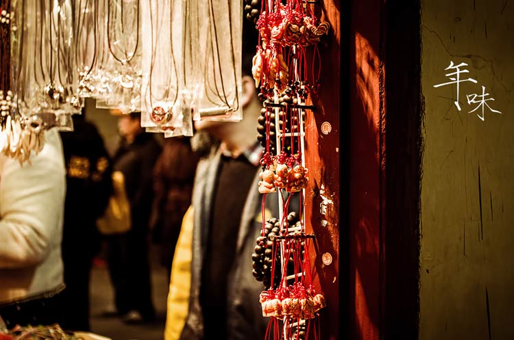
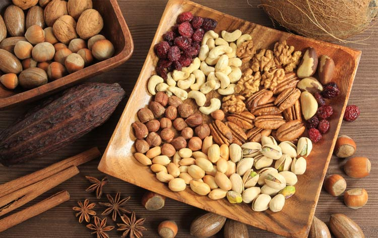
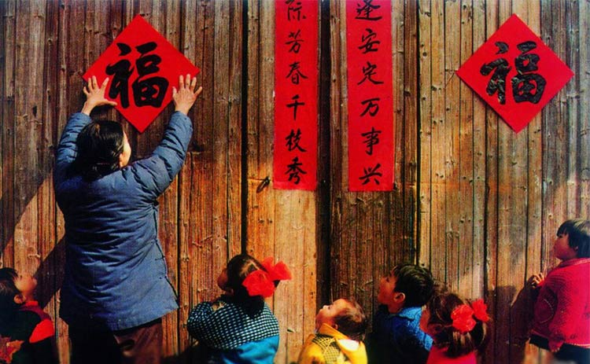

新年的第一天伴随着倒计时的钟声、伴随着丝丝缕缕鞭炮的味道，来到了眼前。过去一年里的很多时间，分离以数不清的种形式横亘在自己、家人和故乡之间。或许你是求学在外的学子，寒暑假你会坐上火车回家，听听母亲琐碎的唠叨和父亲郑重的嘱咐；或许你是在外打拼的白领，每年春节千方百计找黄牛买到尽可能早的车票，回家看看一年当中没经过你同意就爬上父母脸颊的皱纹；或许你是背井离乡打拼在外的工人，春节回家的二十几个小时，陪你的从来都是硬座和泡面，家里有因为生疏而羞涩的孩子和仍然穿着去年那件衣服迎接你的妻子……
不管怎么样，打磨了一整年的思念，终于在今天圆满。你的春节有什么情结？什么是你最不可缺少的春节回忆？
人们总说，年味越来越淡了、过年越来越没意思了。或许鞭炮的声音是少了、民俗活动也渐渐淡出了视野，但团圆的感觉却从未改变。一年当中少有的机会，有时间陪着家人看些“没什么意思”的电视节目，吃些“没什么分量”的食物。
吃坚果在春节期间会变成一个“团体行为”，盘子里摆着各种坚果、小零食，舌头和牙齿不停打架，嗑的瓜子壳乱飞。并不坚硬的坚果在柔软的口腔里酝酿发酵，间或有人提及“对象”、“薪水”、“孩子”等话题，琐碎的家常、琐碎的爱和温暖，组成了一个普通的新年。
新年之时家家户户都会贴春联、窗花、放鞭炮。古时候邻里乡亲会排着队请“知识青年”挥毫泼墨写上一副对联，心灵手巧会剪窗花的姑娘似乎也更容易嫁出去，放鞭炮则能驱赶邪怪、招来吉祥……
年是千万处的红，在这许多的红当中春联的红、窗花的红、鞭炮炸开满世界的红是其中最浓墨重彩的一笔。红的灿烂、红的吉祥、红的五谷丰登、红的火树银花（哎呀手抖用错了成语，但是我没打算删）……
无论春联的红、窗花的红、亦或者是噼里啪啦的炮竹的红，每一种红里都蕴含着一份吉祥的寓意，每一种红都是中华民族“年”文化的传承，每一种红都是来年的艳阳高照、五谷丰登，每一种红都红遍了祖国的山川河流，印刻在每个中国人的心里！
1、团圆和爱是春节永远不变的主题，红彤彤的年味见证了你和家人每一个幸福的微笑；
2、春节第一天，365日历全体时间骑士贺新年快乐，今后的每一秒我们和时间与你同在！